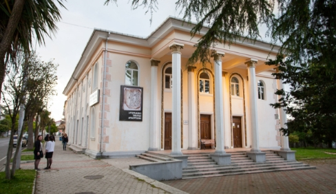
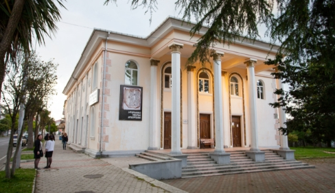

ტერიტორია 1
ქობულეთის დაცული ტერიტორიები (ქობულეთის სახელმწიფო ნაკრძალი და აღკვეთილი) საერთაშორისო მნიშვნელობის, განსაკუთრებით წყლის ფრინველთა საბინადროდ ვარგისი, რამსარის კონვენციით აღიარებული უნიკალური ჭარბტენიანი ეკოსისტემების, როგორც მაღალი ღირებულებების მქონე ბუნებრივი მემკვიდრეობის გადარჩენის მიზნით შეიქმნა. წყლის ფრინველთა და მცენარეების მრავალფეროვნებით გამორჩეული ტორფნარები მდებარეობს აჭარის ავტონომიურ რესპუბლიკაში და მოიცავს ქობულეთის ზღვისპირა ვაკის ჩრდილო-აღმოსავლეთ ნაწილს.
ქობულეთის დაცული ტერიტორიები მნიშვნელოვანი ჰაბიტატებია გადამფრენი, მობუდარი და მოზამთრე წყლის ფრინველთა სახეობებისათვის. ბოტანიკოსების დიდ დაინტერესებას იწვევს აქ არსებული ბორეალური სახეობები: სფაგნუმი ანუ თეთრი ხავსი და მწერიჭამია დროზერა.
ქობულეთის დაცული ტერიტორიები მოიცავს ისპანი 1-ისა და ისპანი 2-ის სფაგნუმიან ტორფნარებს, რომლებზეც მოწყობილია ბილიკები და ვიზიტორებს საშუალება აქვთ განახორციელონ საგანმანათლებლო-სამეცნიერო ტურები. ვიზიტორთა ცენტრი კომბინირებულია ადმინისტრაციულ შენობასთან. აქვე შესაძლებელია ჭაობის თხილამურების დაქირავება და სფაგნუმიან ტორფნარზე გასეირნება.
ქ. ქობულეთი, აღმაშენებლის #271
 
